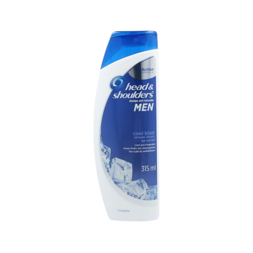
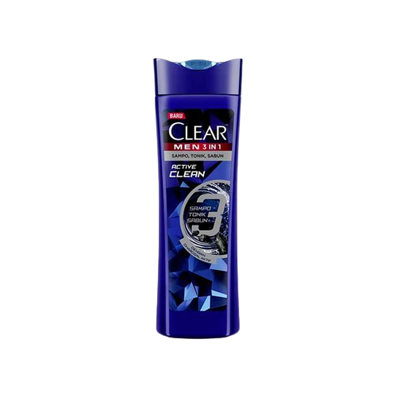

Meski perawatan pria tidak banyak, tetapi shampo menjadi salah satu jenis perawatan rambut yang pastinya dipakai semua pria. Untuk seorang pria, rambut harus menjadi perhatian. Sebab dengan berbagai aktivitas di luar membuat pria banyak terpapar sinar matahari dan mudah berkeringat sehingga rambutnya bau apek.
"Dengan melakukan dua kali proses sampo setiap keramas, kita akan menjaga kulit kepala dan rambut bersih dan meminimalisir terkena masalah kulit kepala, seperti sensitif, ketombe dan berminyak."
- Senior Education Manager Kérastase Indonesia, Sitoresmi
Rekomendasi shampo untuk laki-laki sehingga Anda bisa menampilkan rambut bagus pria milik Anda. Yuk simak rekomendasinya!
1. Head & Shoulders Men Shampoo
Berbeda dengan rekomendasi shampo untuk rambut anak. merek shampo ini tentunya merek shampo khusus untuk kaum pria. Rekomendasi pertama adalah Head & Shoulders Men Shampoo. Terdapat dua varian yang bisa menjadi favorit Anda, yaitu Head & Shoulders Men Shampoo Hair Retain dan Head & Shoulders Men Shampoo Cool Blast.
Head & Shoulders Men Shampoo Hair Retain sangat cocok untuk Anda yang banyak aktivitas di luar, karena bisa menyegarkan kulit kepala Anda. Produk ini juga terbukti ampuh menghilangkan ketombe, dan mengurangi kerontokan rambut akibat patah.
Sedangkan untuk Shoulders Men Shampoo Cool Blast mengandung formula menthol yang akan memberikan sensasi dingin saat dipakai, sehingga Anda bisa merasakan kesegaran sepanjang hari. Dengan three action formula membersihkan kulit kepala dari ketombe hingga mencegahnya agar tidak datang kembali. Dari kedua rekomendasi, Anda tinggal menyesuaikan sesuai kebutuhan dan selera Anda.
2. Clean Men 3-in-1 Shampoo Active Clean
Rekomendasi selanjutnya adalah Clean Men 3-in-1 Shampoo Active Clean. Produk ini merupakan shampo tonik dan sabun dengan pelembab dan kandungan charcoal. Cocok untuk Anda yang memiliki rambut yang berminyak, karena bisa menghilangkan minyak.
Tak hanya itu, produk ini juga ampuh menghilangkan ketombe. Anda bisa menggunakannya untuk merawat kulit kepala dan rambut. Dengan harga yang terjangkau pastinya, produk yang satu ini memang wajib sekali untuk dicoba!
3. Garnier Men Neril Loss Guard Shampoo
.png)
Garnier Men Nerill Loss Guard Shampoo merupakan salah satu produk perawatan rambut terbaik untuk pria. Produk ini bisa mengatasi kerontokan parah dengan pemakaian yang teratur dan proses bertahap. Sebab produk ini menguatkan akar rambut supaya tidak mudah patah dan rontok.
Membersihkan secara menyeluruh, Anda tidak perlu khawatir karena dengan bahan alami chamomile, horsetail Anda bisa mengatasi rontok dengan lebih mudah sehingga tidak terjadi kebotakan. Wanginya harum dan tentunya membuat aura gentle Anda menjadi lebih muncul. Produk dari Garnier ini memang cocok dijadikan sebagai sampo pria terbaik yang wajib dicoba.
4. Zinc Shampoo Men Active Cool
.png)
Zinc Shampoo Men Active Cool juga salah satu produk shampo pria terbaik, cocok untuk Anda yang bermasalah dengan ketombe dan kulit kepala yang gatal. Dengan formula yang disempurnakan complex zinc pt-o serum inovasi dari Jepang, Anda bisa menghilangkan ketombe dengan pemakaian teratur.
Dilengkapi dengan cool menthol membuat kulit kepala Anda menjadi lebih segar dan dingin. Cocok digunakan setelah beraktivitas dibawah terik sinar matahari. Sehingga membuat Anda menjadi lebih rileks.
5. Tresemme Shampoo Keratin Smooth
.png)
Terakhir, Tresemme Shampoo Keratin Smooth merupakan shampo dengan kualitas salon yang memiliki formula hydrolyzed keratin untuk rambut lembut hingga 48 jam. Menutrisi rambut hingga ke 10 lapisannya.
Anda juga tidak perlu khawatir, karena rambut tidak akan kering dan kusut, sehingga cocok untuk rambut yang sering di stylized. Dengan pemakaian teratur, produk ini cocok untuk Anda yang ingin mendapatkan rambut lembut dan mudah diatur.
Nah, berikut merupakan cara memilih dan rekomendasi merek shampo terbaik yang wajib Anda cobra.